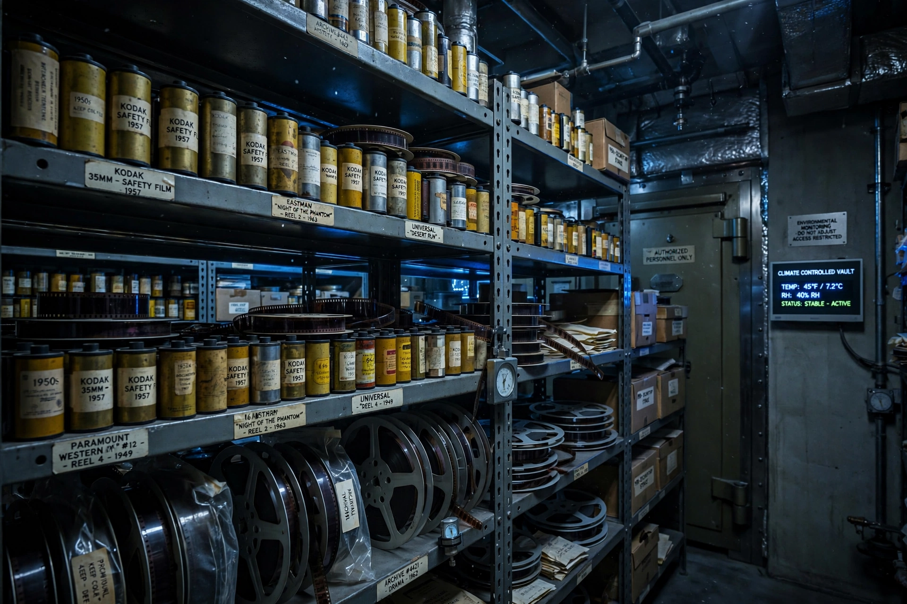

National Film Registry
The National Film Registry (NFR) is the United States National Film Preservation Board's annual selection of films deemed "culturally, historically, or aesthetically significant" and recommended for preservation by the Library of Congress. Established by the National Film Preservation Act of 1988, the registry adds 25 films each year, chosen by the Librarian of Congress from public nominations and the advice of the National Film Preservation Board. Films must be at least ten years old to be eligible.

History and selection
The registry was created after debates over the colorization of black-and-white classics highlighted the fragility of America's film heritage. The first list, announced in 1989, included Citizen Kane, Casablanca, The Godfather, Gone with the Wind, Singin' in the Rain and Star Wars. The selection is deliberately eclectic, encompassing Hollywood features, documentaries, avant-garde and amateur films, newsreels, silent films, music videos and even home movies such as the Zapruder film.
Preservation
Selection does not itself guarantee preservation funding, but it focuses public and archival attention on the chosen works. The Library of Congress Packard Campus for Audio-Visual Conservation in Culpeper, Virginia, holds preservation copies of many registry titles. As of the mid-2020s, the registry contains more than 900 films.